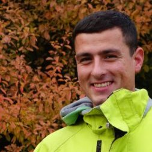

|
Pod Harfou 25 190 00 Prague 9 |
Ing. Jakub Pištěk  |
pistekjakub@gmail.com +420 606 883 909 |
Overview
| Core skills | I am very good at solving complex problems in front-end web development with responsive designs from user’s perspective. In back-end I have been using actively a microservice architecture for the last 2 years. My strength is design and development of microservices using appropriate data structures and algorithms. |
|---|---|
| Areas of interest | Fullstack development, I like learning new frameworks for an inspiration and writing automation tools to make feature delivery simpler |
Education
| 2011 - 2013 | Czech Technical University, Faculty of Informatics: Knowledge engineering (M.Sc. degree) |
|---|---|
| 2008 - 2011 | Czech Technical University, Faculty of Electrical Engineering: Software engineering (B.Sc. degree) |
| 2004 - 2008 | Secondary Technical School focused on Software development, Databases and Networking |
Work Experience
| 11/2017 - now |
(3000 - 4000 employees)
Senior Web developer, InnerWorkings Developing VALO Portal and other supplying projects using agile (scrum) methodology that covers marketing execution and helps to match Fortune 500 brands with the best suppliers around the world. Presenting new features to project stakeholders. .NET CORE, MICROSERVICES, SERVICE FABRIC, REACT, REDUX, LESS, MSSQL, KAFKA, MINIO, REDIS, JENKINS, DOCKER, KUBERNETES |
|---|---|
| 7/2015 - 10/2017 |
(200 - 500 employees)
Web developer, Radio Free Europe/Radio Liberty Inc. Development and maintenance of Pangea CMS and responsive front-end for journalists. Pangea CMS enables to publish multimedia content in 28 languages and allows to connect with more than 30 social networks. ASP.NET WEBFORMS, ASP.NET MVC, MSSQL, ADO.NET, LESS, GIT |
| 1/2015 - 6/2015 |
(150 - 200 employees)
Senior ASP.NET MVC developer, ePojisteni.cz s.r.o. Building a web application which allows to compare over 500 insurance products. .NET, ASP.NET MVC, LINQ2SQL, MSSQL, QUARTZ.NET, ABCPDF.NET, LESS, GIT |
| 1/2014 - 1/2015 |
(20 - 25 employees)
ASP.NET WebForms developer, Creasoft s.r.o Development and maintenance of two company core products targeted on customers from financial sector such as banks, pension funds, financial intermediaries, advisors/consultants and insurance companies. ASP.NET WEBFORMS, MSSQL, LESS, TWITTER BOOTSTRAP 3, ADO.NET, TELERIK WEB CONTROLS, TFS |
| 12/2010 - 1/2014 |
(5 - 10 employees)
Junior ASP.NET WebForms and MVC developer, Schneedorfer s.r.o Part of a team working on automated Internet data-crawler. I was responsible for migrating data from slow relational databases to graph database (neo4j). Apart of that I have built few e-shops and improved our CMS. ASP.NET WEBFORMS, ASP.NET MVC, ENTITY FRAMEWORK, ADO.NET, MSSQL, NEO4J, d3.js, nvd3.js, CSS, SVN |
Technology Overview
| Front-end | JS, REACT, REDUX, TYPESCRIPT, CSS, LESS, ANTD, BOOTSTRAP RESPONSIVE DESIGN, KNOCKOUT, AMPLIFY, UNDERSCORE |
|---|---|
| Back-end | .NET CORE, MICROSERVICES, ASP.NET SERVER CONTROLS, EPISERVER FRAMEWORK, KAFKA, DOCKER, KUBERNETES |
| Version Control Systems | SVN, TFS, GIT |
| Databases | MSSQL, MYSQL, MINIO, REDIS, GRAPH DATABASES (NEO4J) |
| Specialities | Software development, Responsive design, Machine learning and data mining alghorithms, Collaborative filtering algorithms, Business intelligence, Nature inspired algorithms |
Knowledge and Skills
| Languages | Czech (native), English (fluent), Russian (B1), German (A2) |
|---|---|
| Interests | Cycling, Winter sports, Climbing, Traveling and gardening |
| Other | Driver's licence B |